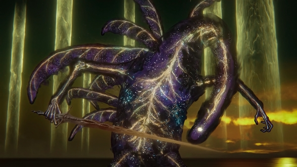

The Elden Beast is a vast, otherworldly creature that serves as one of the final and most important beings in Elden Ring. It appears as a divine, cosmic entity with a translucent body, glowing gold from within, and a form that feels part dragon, part sea creature, and part living constellation. Rather than seeming like a normal monster rooted in flesh and blood, it gives off the impression of something ancient, sacred, and far beyond human understanding. Its design reflects the game’s larger themes of divinity, fate, and the strange influence of outer cosmic powers over the Lands Between.
In the story, the Elden Beast is deeply tied to the Greater Will and the Elden Ring itself, making it more than just a final boss. It represents divine order in its purest and most alien form, acting almost like a living embodiment of the power that shaped the world’s current structure. When encountered, it turns the battle into something surreal and symbolic, placing the player against not just a creature, but a manifestation of the very force behind the golden order. Its presence feels majestic and unsettling at the same time, giving the ending of the game a mythic and almost celestial tone.